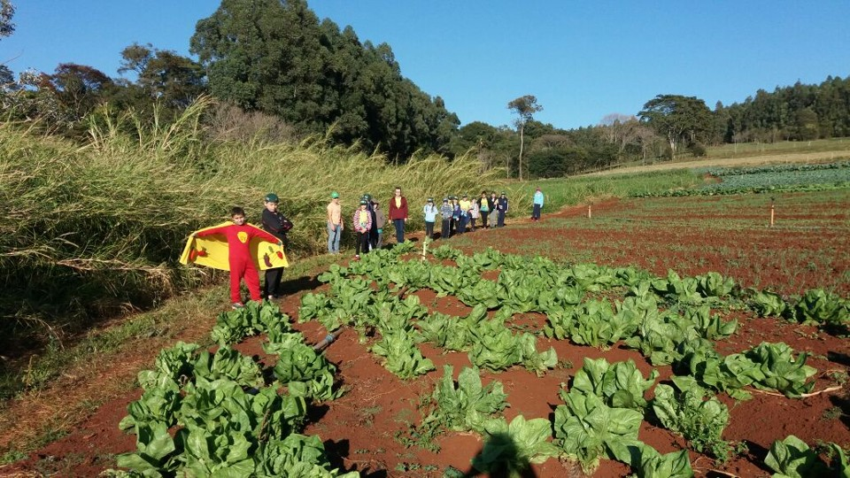
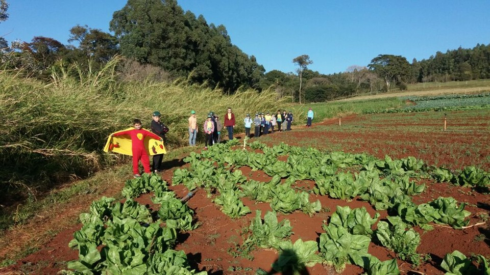

História do Agrinho
A história do Agrinho é bastante interessante e representa um importante projeto educacional desenvolvido no estado de São Paulo, Brasil. Agrinh significa "Agente Jovem Ambientalista" e é um programa idealizado pela Secretaria de Agricultura e Abastecimento do Estado de São Paulo.
O Agrinho foi criado com o objetivo principal de promover a conscientização ambiental e agrícola entre os jovens, especialmente estudantes das escolas públicas paulistas. O programa visa não apenas educar sobre práticas agrícolas sustentáveis, mas também incentivar a preservação ambiental e o desenvolvimento de uma consciência crítica em relação aos desafios e oportunidades no setor agrícola. O Agrinho é um programa educacional desenvolvido pelo Sistema Farsul (Federação da Agricultura do Estado do Rio Grande do Sul), em parceria com o Serviço Nacional de Aprendizagem Rural (SENAR-RS) e outras entidades ligadas ao setor agropecuário. O programa foi criado em 1998 e tem como objetivo principal promover a educação no meio rural, especialmente nas escolas públicas, abordando temas relacionados à agricultura, meio ambiente, saúde, segurança e cidadania. O programa tem como objetivo principal promover a educação no meio rural, especialmente em escolas públicas, abordando temas fundamentais como agricultura, meio ambiente, saúde, segurança e cidadania. A ideia central é integrar esses temas de forma interdisciplinar, utilizando material didático específico e estruturado para diferentes níveis de ensino, desde a Educação Infantil até o Ensino Fundamental. O Agrinho não se limita apenas ao ensino teórico em sala de aula. Ele também promove atividades práticas, visitas a propriedades rurais, hortas escolares, projetos de sustentabilidade ambiental e concursos culturais, como de redação e desenho. Essas atividades visam não apenas enriquecer o aprendizado dos alunos, mas também fortalecer o vínculo com o meio rural e desenvolver uma consciência crítica e responsável sobre questões socioambientais.
Ao longo dos anos, o Agrinho tem se destacado como um dos principais programas de educação rural no Brasil, contribuindo significativamente para a formação de crianças e jovens mais conscientes, engajados e preparados para enfrentar os desafios do século XXI, tanto no campo quanto nas cidades.
Galeria de Fotos

 

.jpg)
.jpg)